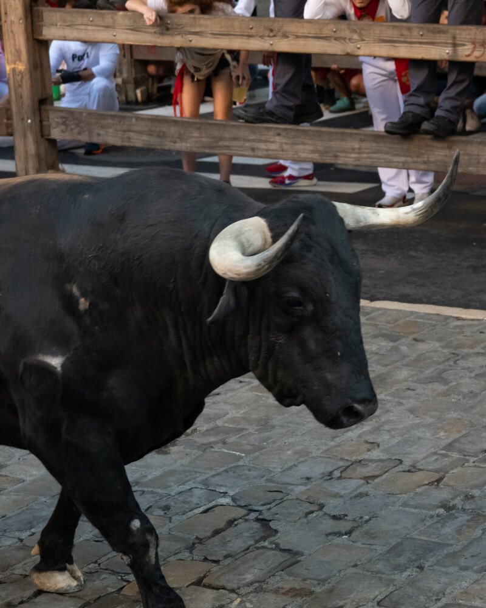
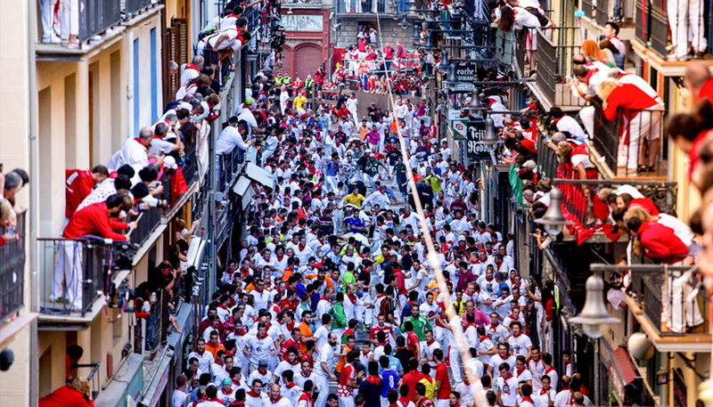

Qué hacer en San Fermín
Una guía completa con todos los planes, momentos y experiencias para vivir San Fermín de verdad.
Leer másEl encierro es el acto más conocido de San Fermín. Cada mañana, durante las fiestas, los toros recorren las calles del casco antiguo de Pamplona acompañados por corredores, en un recorrido que dura apenas unos minutos pero concentra toda la tensión y emoción de la fiesta.
Tiene lugar cada día entre el 7 y el 14 de julio a las 8:00 de la mañana, recorriendo calles como Santo Domingo, Mercaderes y Estafeta hasta la plaza de toros.
La alta afluencia de gente, las limitaciones de acceso y la propia velocidad del encierro hacen que verlo desde la calle sea complicado. Elegir bien el punto desde el que verlo es clave para entender realmente lo que ocurre.
Si quieres entender mejor las diferencias entre cada opción, puedes ver esta guía sobre cómo ver el encierro en Pamplona.
Existen diferentes formas de vivir el encierro, cada una con sus particularidades:
Cada opción tiene su lugar, pero la diferencia está en cómo quieres vivir el momento.
En nuestro caso, trabajamos principalmente con balcones y accesos controlados, porque es donde realmente cambia la experiencia. A partir de ahí, te proponemos opciones concretas según lo que buscas: más cercanía, más perspectiva o más tranquilidad.
Cada experiencia parte de una misma base: ver el encierro con seguridad y perspectiva. A partir de ahí, cambia el cómo.



Las opciones varían según la ubicación, el tipo de acceso y el nivel de exclusividad. De forma orientativa, los balcones suelen situarse entre 100€ y 250€ por persona.
Más allá del precio, lo importante es elegir bien el tipo de experiencia. No es lo mismo estar en un punto con mucha intensidad que en uno donde puedes ver el recorrido completo con más perspectiva.
Cuando nos escribes, no te mandamos un listado genérico: te proponemos opciones concretas en función de lo que quieres vivir, explicándote qué cambia en cada caso.
Más allá de verlo, se trata de entenderlo. Desde un balcón, el encierro deja de ser un instante fugaz para convertirse en algo que puedes seguir, anticipar y recordar.
No es solo una cuestión de altura, sino de contexto: saber dónde estás, qué está pasando y por qué ese tramo es diferente a otro.
Nuestra propuesta consiste en seleccionar bien esos puntos y acompañarte en la elección, para que la experiencia tenga sentido desde el principio.
Esto no nace como un servicio. Nace de haber vivido San Fermín desde dentro durante generaciones.
Nuestro papel es simplemente abrir esa puerta a quienes quieren vivirlo de una forma más auténtica, desde una forma de entender la fiesta que explicamos en quiénes somos.
Cuéntanos cómo te gustaría vivirlo y te proponemos opciones a medida, sin compromiso.

No tiene nada que ver con estar abajo. Mucho mejor.
El encierro es solo uno de los momentos que marcan la fiesta. Antes de que todo empiece, el ambiente se concentra en el Chupinazo, y después cada persona encuentra su forma de seguir viviendo San Fermín.
Si lo que buscas es algo más flexible o adaptado a tu forma de viajar, puedes explorar también las experiencias a medida, donde combinamos distintos momentos según lo que realmente quieres vivir.
Porque San Fermín no es un solo momento. Es todo lo que ocurre entre uno y otro.
Algunas experiencias no terminan cuando acaba el evento. Para grupos, empresas o momentos especiales, podemos acompañarlo con piezas diseñadas específicamente para la ocasión.
Desde elementos sencillos hasta detalles más cuidados, todo se plantea como una extensión natural de la experiencia.
Porque a veces lo que se lleva puesto también forma parte de lo vivido.